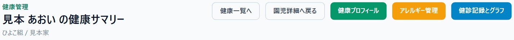
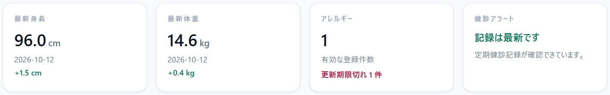
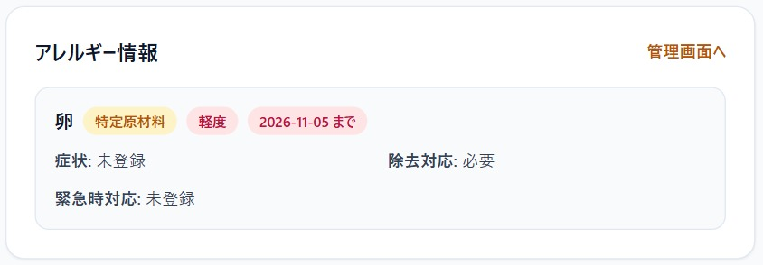

園児ひとりの健康情報を見る
見るだけのときは、この画面で名前、測定日、登録されている内容を確かめます。
画面は架空の園児の記録です。画像を押すと大きく見られます。
1名前を確かめる
「健康管理一覧」で、見たい園児の「健康サマリー」を押します。画面の一番上に、園児の名前とクラスが出ます。別の園児を探すときは「健康一覧へ」を押します。

2身長・体重と、測った日を見る
「最新身長」「最新体重」の数字の下に、それぞれの日付が出ます。「健診アラート」に確認が必要と出たら、「健診記録とグラフ」を開き、「測定一覧」の日付と種別を確かめます。

「記録は最新です」には「入所時」の記録も含まれます。定期健診を受けた日を調べるときは、「測定一覧」で種別が「定期健診」の行を見ます。
3知りたい内容の画面を開く
かかりつけ医や園で気をつけることは「健康プロフィール」を開きます。アレルギーの登録内容と有効期限は「アレルギー情報」で確認できます。詳しく見るときは「管理画面へ」を押します。
健診の記録や測定値の推移を見るときは、上にある「健診記録とグラフ」を押します。
